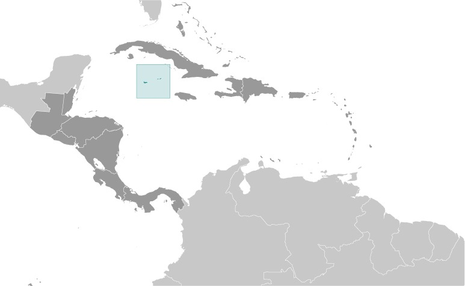
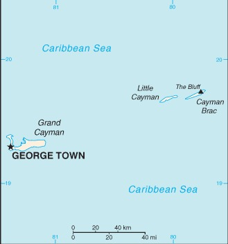
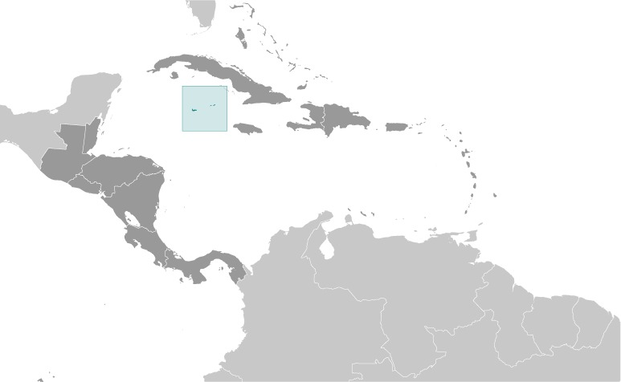
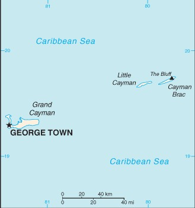

-
Introduction :: Cayman Islands
-
Background:The Cayman Islands were colonized from Jamaica by the British during the 18th and 19th centuries and were administered by Jamaica after 1863. In 1959, the islands became a territory within the Federation of the West Indies. When the Federation dissolved in 1962, the Cayman Islands chose to remain a British dependency. The territory has transformed itself into a significant offshore financial center.
-
Geography :: Cayman Islands
-
Location:Caribbean, three-island group (Grand Cayman, Cayman Brac, Little Cayman) in Caribbean Sea, 240 km south of Cuba and 268 km northwest of JamaicaGeographic coordinates:19 30 N, 80 30 WMap references:Central America and the CaribbeanArea:total: 264 sq kmland: 264 sq kmwater: 0 sq kmcountry comparison to the world: 210Area - comparative:1.5 times the size of Washington, DCLand boundaries:0 kmCoastline:160 kmMaritime claims:territorial sea: 12 nmexclusive fishing zone: 200 nmClimate:tropical marine; warm, rainy summers (May to October) and cool, relatively dry winters (November to April)Terrain:low-lying limestone base surrounded by coral reefsElevation:lowest point: Caribbean Sea 0 mhighest point: 1 km SW of The Bluff on Cayman Brac 50 mNatural resources:fish, climate and beaches that foster tourismLand use:agricultural land: 11.2% (2011 est.)arable land: 0.8% (2011 est.) / permanent crops: 2.1% (2011 est.) / permanent pasture: 8.3% (2011 est.)forest: 52.9% (2011 est.)other: 35.9% (2011 est.)Irrigated land:NAPopulation distribution:majority of the population resides on Grand CaymanNatural hazards:hurricanes (July to November)Environment - current issues:no natural freshwater resources; drinking water supplies are met by reverse osmosis desalination plants and rainwater catchment; trash washing up on the beaches or being deposited there by residents; no recycling or waste treatment facilities; deforestation (trees being cut down to create space for commercial use)Geography - note:important location between Cuba and Central America
-
People and Society :: Cayman Islands
-
Population:61,944 (July 2020 est.)
note: most of the population lives on Grand Cayman
country comparison to the world: 204Nationality:noun: Caymanian(s)adjective: CaymanianEthnic groups:mixed 40%, White 20%, Black 20%, expatriates of various ethnic groups 20%Languages:English (official) 90.9%, Spanish 4%, Filipino 3.3%, other 1.7%, unspecified 0.1% (2010 est.)Religions:Protestant 67.8% (includes Church of God 22.6%, Seventh Day Adventist 9.4%, Presbyterian/United Church 8.6%, Baptist 8.3%, Pentecostal 7.1%, non-denominational 5.3%, Anglican 4.1%, Wesleyan Holiness 2.4%), Roman Catholic 14.1%, Jehovah's Witness 1.1%, other 7%, none 9.3%, unspecified 0.7% (2010 est.)Age structure:0-14 years: 17.75% (male 5,535/female 5,457)15-24 years: 11.86% (male 3,673/female 3,675)25-54 years: 41.37% (male 12,489/female 13,140)55-64 years: 14.78% (male 4,398/female 4,755)65 years and over: 14.24% (male 4,053/female 4,769) (2020 est.)population pyramid: The World Factbook Field Image ModalCentral America :: Cayman Islands Print
The World Factbook Field Image ModalCentral America :: Cayman Islands Print Image DescriptionThis is the population pyramid for Cayman Islands. A population pyramid illustrates the age and sex structure of a country's population and may provide insights about political and social stability, as well as economic development. The population is distributed along the horizontal axis, with males shown on the left and females on the right. The male and female populations are broken down into 5-year age groups represented as horizontal bars along the vertical axis, with the youngest age groups at the bottom and the oldest at the top. The shape of the population pyramid gradually evolves over time based on fertility, mortality, and international migration trends.
Image DescriptionThis is the population pyramid for Cayman Islands. A population pyramid illustrates the age and sex structure of a country's population and may provide insights about political and social stability, as well as economic development. The population is distributed along the horizontal axis, with males shown on the left and females on the right. The male and female populations are broken down into 5-year age groups represented as horizontal bars along the vertical axis, with the youngest age groups at the bottom and the oldest at the top. The shape of the population pyramid gradually evolves over time based on fertility, mortality, and international migration trends.
For additional information, please see the entry for Population pyramid on the Definitions and Notes page under the References tab.Median age:total: 40.5 yearsmale: 39.7 yearsfemale: 41.2 years (2020 est.)country comparison to the world: 51Population growth rate:1.9% (2020 est.)country comparison to the world: 50Birth rate:11.9 births/1,000 population (2020 est.)country comparison to the world: 163Death rate:6.1 deaths/1,000 population (2020 est.)country comparison to the world: 158Net migration rate:13 migrant(s)/1,000 population (2020 est.)note: major destination for Cubans trying to migrate to the US
country comparison to the world: 4Population distribution:majority of the population resides on Grand CaymanUrbanization:urban population: 100% of total population (2020)rate of urbanization: 1.27% annual rate of change (2015-20 est.)total population growth rate v. urban population growth rate, 2000-2030: PDFMajor urban areas - population:35,000 GEORGE TOWN (capital) (2018)Sex ratio:at birth: 1.02 male(s)/female0-14 years: 1.01 male(s)/female15-24 years: 1 male(s)/female25-54 years: 0.95 male(s)/female55-64 years: 0.92 male(s)/female65 years and over: 0.85 male(s)/femaletotal population: 0.95 male(s)/female (2020 est.)Infant mortality rate:total: 5.5 deaths/1,000 live birthsmale: 6.3 deaths/1,000 live birthsfemale: 4.8 deaths/1,000 live births (2020 est.)country comparison to the world: 171Life expectancy at birth:total population: 81.6 yearsmale: 78.9 yearsfemale: 84.4 years (2020 est.)country comparison to the world: 29Total fertility rate:1.83 children born/woman (2020 est.)country comparison to the world: 143Drinking water source:improved: urban: 97.4% of populationtotal: 97.4% of populationunimproved: urban: 2.6% of populationtotal: 2.6% of population (2015 est.)Sanitation facility access:improved: urban: 95.6% of populationtotal: 95.6% of populationunimproved: urban: 4.4% of populationtotal: 4.4% of population (2015 est.)HIV/AIDS - adult prevalence rate:NAHIV/AIDS - people living with HIV/AIDS:NAHIV/AIDS - deaths:NAEducation expenditures:NALiteracy:definition: age 15 and over has ever attended schooltotal population: 98.9%male: 98.7%female: 99% (2007)Unemployment, youth ages 15-24:total: 13.8%male: 16.4%female: 11.4% (2015 est.)country comparison to the world: 98 -
Government :: Cayman Islands
-
Country name:conventional long form: noneconventional short form: Cayman Islandsetymology: the islands' name comes from the native Carib word "caiman," describing the marine crocodiles living thereDependency status:overseas territory of the UKGovernment type:parliamentary democracy; self-governing overseas territory of the UKCapital:name: George Town (on Grand Cayman)geographic coordinates: 19 18 N, 81 23 Wtime difference: UTC-5 (same time as Washington, DC, during Standard Time)etymology: named after English King George III (1738-1820)Administrative divisions:6 districts; Bodden Town, Cayman Brac and Little Cayman, East End, George Town, North Side, West BayIndependence:none (overseas territory of the UK)National holiday:Constitution Day, the first Monday in July (1959)Constitution:history: several previous; latest approved 10 June 2009, entered into force 6 November 2009 (The Cayman Islands Constitution Order 2009)amendments: amended several times, last in 2016Legal system:English common law and local statutesCitizenship:see United KingdomSuffrage:18 years of age; universalExecutive branch:chief of state: Queen ELIZABETH II (since 6 February 1952); represented by Governor Martyn ROPER (since 29 October 2018)head of government: Premier Alden MCLAUGHLIN (since 29 May 2013)cabinet: Cabinet selected from the Legislative Assembly and appointed by the governor on the advice of the premierelections/appointments: the monarchy is hereditary; governor appointed by the monarch; following legislative elections, the leader of the majority party or majority coalition appointed premier by the governorLegislative branch:description: unicameral Legislative Assembly (21 seats; 19 members directly elected by majority vote and 2 ex officio members - the deputy governor and attorney general - appointed by the governor; members serve 4-year terms)elections: last held on 24 May 2017 (next to be held on 26 May 2021)election results: percent of vote by party - independent 44.7%, PPM 31.2%, CDP 24.1%; seats by party - independent 9, PPM 7, CDP 3; composition - men 18, women 3, percent of women 14.3%Judicial branch:highest courts: Court of Appeal (consists of the court president and at least 2 judges); Grand Court (consists of the court president and at least 2 judges); note - appeals beyond the Court of Appeal are heard by the Judicial Committee of the Privy Council (in London)judge selection and term of office: Court of Appeal and Grand Court judges appointed by the governor on the advice of the Judicial and Legal Services Commission, an 8-member independent body consisting of governor appointees, Court of Appeal president, and attorneys; Court of Appeal judges' tenure based on their individual instruments of appointment; Grand Court judges normally appointed until retirement at age 65 but can be extended until age 70subordinate courts: Summary CourtPolitical parties and leaders:People's Progressive Movement or PPM [Alden MCLAUGHLIN]
Cayman Democratic Party or CDP [McKeeva BUSH]International organization participation:Caricom (associate), CDB, Interpol (subbureau), IOC, UNESCO (associate), UPUDiplomatic representation in the US:none (overseas territory of the UK)Diplomatic representation from the US:none (overseas territory of the UK); consular services provided through the US Embassy in JamaicaFlag description:a blue field with the flag of the UK in the upper hoist-side quadrant and the Caymanian coat of arms centered on the outer half of the flag; the coat of arms includes a crest with a pineapple, representing the connection with Jamaica, and a turtle, representing Cayman's seafaring tradition, above a shield bearing a golden lion, symbolizing Great Britain, below which are three green stars (representing the three islands) surmounting white and blue wavy lines representing the sea; a scroll below the shield bears the motto HE HATH FOUNDED IT UPON THE SEASNational symbol(s):green sea turtleNational anthem:name: Beloved Isle Caymanlyrics/music: Leila E. ROSSnote: adopted 1993; served as an unofficial anthem since 1930; as a territory of the United Kingdom, in addition to the local anthem, "God Save the Queen" is official (see United Kingdom)
-
Economy :: Cayman Islands
-
Economic overview:
With no direct taxation, the islands are a thriving offshore financial center. More than 65,000 companies were registered in the Cayman Islands as of 2017, including more than 280 banks, 700 insurers, and 10,500 mutual funds. A stock exchange was opened in 1997. Nearly 90% of the islands' food and consumer goods must be imported. The Caymanians enjoy a standard of living comparable to that of Switzerland.
Tourism is also a mainstay, accounting for about 70% of GDP and 75% of foreign currency earnings. The tourist industry is aimed at the luxury market and caters mainly to visitors from North America. Total tourist arrivals exceeded 2.1 million in 2016, with more than three-quarters from the US.
GDP real growth rate:1.7% (2014 est.)1.2% (2013 est.)1.6% (2012 est.)country comparison to the world: 148Inflation rate (consumer prices):2% (2017 est.)-0.6% (2016 est.)country comparison to the world: 110Credit ratings:Moody's rating: Aa3 (1997)GDP (purchasing power parity) - real:$2.507 billion (2014 est.)$2.465 billion (2013 est.)$2.435 billion (2012 est.)GDP (official exchange rate):$2.25 billion (2008 est.)GDP - per capita (PPP):$43,800 (2004 est.)country comparison to the world: 37GDP - composition, by sector of origin:agriculture: 0.3% (2017 est.)industry: 7.4% (2017 est.)services: 92.3% (2017 est.)GDP - composition, by end use:household consumption: 62.3% (2017 est.)government consumption: 14.5% (2017 est.)investment in fixed capital: 22.1% (2017 est.)investment in inventories: 0.1% (2017 est.)exports of goods and services: 65.4% (2017 est.)imports of goods and services: -64.2% (2017 est.)Ease of Doing Business Index scores:Agriculture - products:vegetables, fruit; livestock; turtle farmingIndustries:tourism, banking, insurance and finance, construction, construction materials, furnitureIndustrial production growth rate:2.2% (2017 est.)country comparison to the world: 124Labor force:39,000 (2007 est.)note: nearly 55% are non-nationals
country comparison to the world: 196Labor force - by occupation:agriculture: 1.9%industry: 19.1%services: 79% (2008 est.)Unemployment rate:4% (2008)4.4% (2004)country comparison to the world: 61Population below poverty line:NABudget:revenues: 874.5 million (2017 est.)expenditures: 766.6 million (2017 est.)Taxes and other revenues:38.9% (of GDP) (2017 est.)country comparison to the world: 51Budget surplus (+) or deficit (-):4.8% (of GDP) (2017 est.)country comparison to the world: 7Fiscal year:1 April - 31 MarchCurrent account balance:-$492.6 million (2017 est.)-$493.5 million (2016 est.)country comparison to the world: 121Exports:$421.9 million (2017 est.)$47.6 million (2016 est.)country comparison to the world: 181Exports - commodities:turtle products, manufactured consumer goodsImports:$787.3 million (2017 est.)$810.1 million (2016 est.)country comparison to the world: 191Imports - commodities:foodstuffs, manufactured goods, fuelsExchange rates:Caymanian dollars (KYD) per US dollar -0.82 (2017 est.)0.82 (2016 est.)0.82 (2015 est.)0.82 (2014 est.)0.83 (2013 est.) -
Energy :: Cayman Islands
-
Electricity access:electrification - total population: 100% (2020)Electricity - production:650 million kWh (2016 est.)country comparison to the world: 160Electricity - consumption:612 million kWh (2016 est.)country comparison to the world: 165Electricity - exports:0 kWh (2016 est.)country comparison to the world: 118Electricity - imports:0 kWh (2016 est.)country comparison to the world: 132Electricity - installed generating capacity:132,000 kW (2016 est.)country comparison to the world: 174Electricity - from fossil fuels:100% of total installed capacity (2016 est.)country comparison to the world: 6Electricity - from nuclear fuels:0% of total installed capacity (2017 est.)country comparison to the world: 63Electricity - from hydroelectric plants:0% of total installed capacity (2017 est.)country comparison to the world: 163Electricity - from other renewable sources:0% of total installed capacity (2017 est.)country comparison to the world: 180Crude oil - production:0 bbl/day (2018 est.)country comparison to the world: 120Crude oil - exports:0 bbl/day (2015 est.)country comparison to the world: 104Crude oil - imports:0 bbl/day (2015 est.)country comparison to the world: 107Crude oil - proved reserves:0 bbl (1 January 2018 est.)country comparison to the world: 116Refined petroleum products - production:0 bbl/day (2017 est.)country comparison to the world: 128Refined petroleum products - consumption:4,400 bbl/day (2016 est.)country comparison to the world: 181Refined petroleum products - exports:0 bbl/day (2015 est.)country comparison to the world: 141Refined petroleum products - imports:4,285 bbl/day (2015 est.)country comparison to the world: 175Natural gas - production:0 cu m (2017 est.)country comparison to the world: 114Natural gas - consumption:0 cu m (2017 est.)country comparison to the world: 130Natural gas - exports:0 cu m (2017 est.)country comparison to the world: 80Natural gas - imports:0 cu m (2017 est.)country comparison to the world: 104Natural gas - proved reserves:0 cu m (1 January 2014 est.)country comparison to the world: 120Carbon dioxide emissions from consumption of energy:643,800 Mt (2017 est.)country comparison to the world: 178
-
Communications :: Cayman Islands
-
Telephones - fixed lines:total subscriptions: 33,338subscriptions per 100 inhabitants: 54.85 (2019 est.)country comparison to the world: 168Telephones - mobile cellular:total subscriptions: 92,691subscriptions per 100 inhabitants: 152.5 (2019 est.)country comparison to the world: 195Telecommunication systems:general assessment: reasonably good overall telephone system with a high fixed-line teledensity; given the high dependence of tourism and activities such as fisheries and offshore financial services, the telecom sector provides a relatively high contribution to overall GDP; good competition in all sectors promotes advancement in mobile telephony and data segments (2018)domestic: introduction of competition in the mobile-cellular market in 2004 boosted subscriptions dramatically; 55 per 100 fixed-line, 153 per 100 mobile-cellular (2019)international: country code - 1-345; landing points for the Maya-1, Deep Blue Cable, and the Cayman-Jamaica Fiber System submarine cables that provide links to the US and parts of Central and South America; satellite earth station - 1 Intelsat (Atlantic Ocean) (2019)note: the COVID-19 outbreak is negatively impacting telecommunications production and supply chains globally; consumer spending on telecom devices and services has also slowed due to the pandemic's effect on economies worldwide; overall progress towards improvements in all facets of the telecom industry - mobile, fixed-line, broadband, submarine cable and satellite - has moderatedBroadcast media:4 TV stations; cable and satellite subscription services offer a variety of international programming; government-owned Radio Cayman operates 2 networks broadcasting on 5 stations; 10 privately owned radio stations operate alongside Radio CaymanInternet country code:.kyInternet users:total: 48,328percent of population: 81.07% (July 2018 est.)country comparison to the world: 198Broadband - fixed subscriptions:total: 24,535subscriptions per 100 inhabitants: 42 (2017 est.)country comparison to the world: 150
-
Transportation :: Cayman Islands
-
National air transport system:number of registered air carriers: 1 (2020)inventory of registered aircraft operated by air carriers: 6Civil aircraft registration country code prefix:VP-C (2016)Airports:3 (2020)country comparison to the world: 193Airports - with paved runways:total: 3 (2017)1,524 to 2,437 m: 2 (2017)914 to 1,523 m: 1 (2017)Airports - with unpaved runways:total: 1 (2012)914 to 1,523 m: 1 (2012)Roadways:total: 785 km (2007)paved: 785 km (2007)country comparison to the world: 188Merchant marine:total: 170by type: bulk carrier 32general cargo 4, oil tanker 22, other 112 (2019)country comparison to the world: 70Ports and terminals:major seaport(s): Cayman Brac, George Town
-
Military and Security :: Cayman Islands
-
Military and security forces:no regular military forces; Royal Cayman Islands Police Service (2019)Military - note:defense is the responsibility of the UK
-
Transnational Issues :: Cayman Islands
-
Disputes - international:
none
Illicit drugs:major offshore financial center; vulnerable to drug transshipment to the US and Europe
Central America ::
Cayman Islands